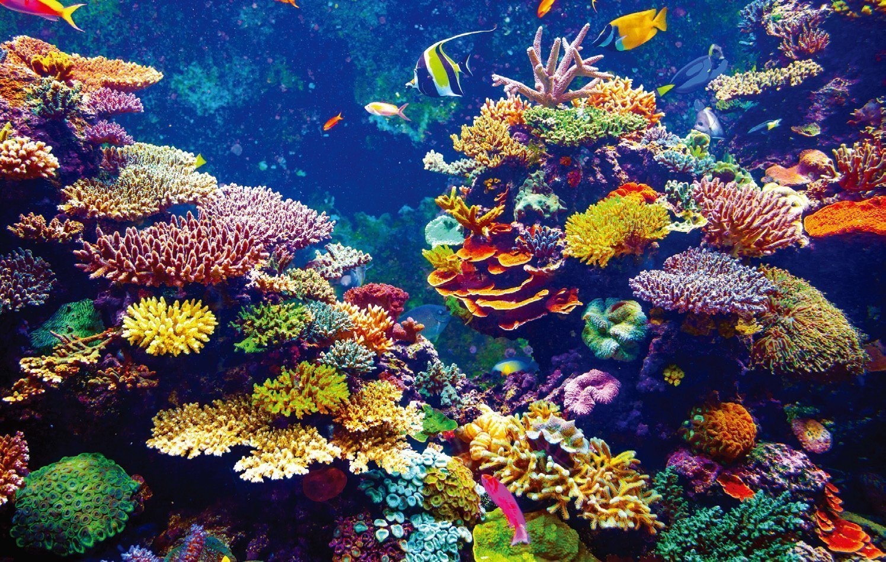

Learn More
Coral reefs have long been affected by increasing levels of CO2 in the atmosphere and the rising global temperature, which causes them to bleach and die. Coralations monitored changes in atmospheric CO2 levels and in chlorophyll level in the reefs in order to evaluate the impact COVID-19 has had in these organisms.
Our project is part of the Quiet Place challenge for it uses space-related information (satellite data) to analyze the environmental effects in coral health related to COVID-19 social isolation - which led to decreases in industrial and urban activities, therefore reducing atmospheric CO2 levels. Not only that, but our project expands beyond the temporary need to address this question, working as a full-time coral observatory, which can be useful for educational, research, and government purposes.

Apo Reef
Learn more about this amazing ecosystem in the Philippines.
Learn More

Florida Reef
Discover the only living coral barrier reef in the continental USA.
Learn More

Great Barrier Reef
Learn about the world's biggest single structure made by living organisms.
Learn More

Mesoamenrican
Learn about this coral reef in Central America through MAR Fund
Learn More

New Caledonian
Discover the world's biggest single structure made by living organisms.
Learn More
COVID-19
Coral reefs are responsible for feeding 500 million people worldwide. Due to global warming, corals - symbioses of zooxanthellae and polyps-, overheat and eliminate a large number of algae in a harmful process known as coral bleaching, affecting satellite measurements of local chlorophyll concentration OC3.
Due to COVID-19’s social isolation, CO2 levels have decreased by 17% (Nature, 2020), affecting sea temperatures. Through NASA’s SeaDAS and AquaMODIS, we analyzed these effects and monitored Chlorophyll Concentration OC3 in 5 coral reefs, tracking their bleaching rates. Finally, we developed a near-real-time coral-watching platform to bring awareness about this issue.
About Us
We are high school students from Brazil who want to see change in the way we interact with the environment. Taking part in the Space Apps Challenge has allowed us to create a tool that will help bring awareness to the impact of human activity in sea life.